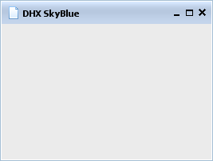
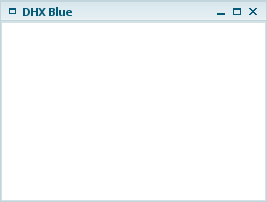
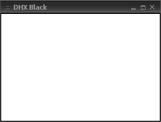
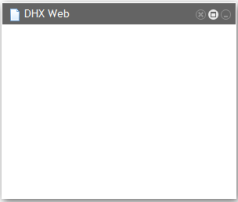

Global dhtmlxWindows Parameters
Global parameters affect the entire system of dhtmlxWindows.
imagePath
Method setImagePath() should be used to set the full paths to the directory where windows image files are located. In this method the user should set the path to 'codebase/imgs/' directory, where skin images are stored. Skin images are grouped by skin name in the directories inside this imgs one. The user shouldn't indicate a certain skin images directory inside imgs one in setImagePath() method, as the system will do it itself.
The following code string should be placed before any of data loading methods:
dhxWins.setImagePath("[full path to this directory]/codebase/imgs/");
Viewport
This parameter sets the invisible area that limits windows' movements. Windows can’t be completely moved outside the viewport. Users can specify the size of the viewport. By default, the size of the viewport occupies the document.body and automatically changes its size when document.body’s size changes.
To enable user-defined viewport, the user should invoke the following code:
dhxWins.enableAutoViewport(false); dhxWins.setViewport(10, 10, 1260, 500, parentObj);
parentObj parameter is used to attach a viewport to a parent object. To attach a viewport to the existing object on the page, the user should do the following:
dhxWins.enableAutoViewport(false); dhxWins.attachViewportTo(obj);
keepInViewport() method, when is set to true, permanently locates a window within the viewport (the window can’t be moved outside the viewport).
dhxWins.window(id).keepInViewport(true/false);
By default, this method is set to false. Thus, all windows can be moved outside the vieport in such a way that only a tiny part of window’s header will be seen.
Setting RTL mode
By default text direction in window is set as left to right. For languages with right to left text direction the user can set RTL mode using setRTL() method:
dhxWins.setRTL(true); // false will set windows mode to LTR
Enable/Disable Effects
There are some default effects that can be enabled/disabled for dhtmlxWindows:
- move;
- resize.
We recommend using effects to make your windows more attractive. However, it must be done reasonably. It should be noted that effects are disabled by default.
The below mentioned snippets describe the way how effects can be enabled and disabled:
dhxWins.setEffect(efName, true); dhxWins.setEffect(efName, false);
The first argument here is the name of the effect (“move” or “resize”), and the second one switches the effect on (true) or off (false). When the user wants to get the current state of an effect, he should use getEffect() method, where the name of the event is set as an argument:
var state = dhxWins.getEffect(efName); // returns true|false;
The method returns true if the effect in question is enabled, and false in case it is disabled.
Skins
This parameter allows users to change dhtmlxWindows skins. There is a set of predefined skins, among which the user can choose one with the help of method setSkin():
dhxWins.setSkin(String skin);
Skins are able to be changed on the fly, i.e. the user can change them very easily in the process of work by using setSkin() method. There is also the possibility for users to create their own skins. The following built-in skins are available in dhtmlxWindows:
|  |  |  |  |
It should be noted that some skins can be available as addons, and they are not included into the package. But they can be downloaded from the site.